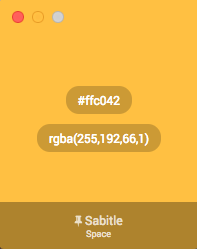

Colorify
Changelog
GitHub Page
Sürükle, bul, kaydet!
Tek bir yazılımda renk bulun, renklerinizi kaydedin ve yönetin.
OSX için indir (.app)

Uygulama henüz BETA testing sürecinde ve gelişmiş fonksiyonları kaldırılmış bulunmaktadır.